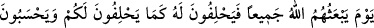
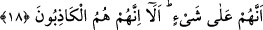

17. Onların malları da oğulları da Allah’a karşı kendilerine bir fayda vermez.
Onlar cehennem ehlidirler. Orada ebedî kalacaklardır.
“Onların malları da oğulları da Allah’a karşı kendilerine bir fayda vermez.” Yâni
Allah Teâlâ’nın azâbına karşı en ufak bir faydası olmaz. Daha önce anlatılan korunma
için yalan yere yemin ediyorlar ama cehenneme girdiklerinde dünyada kendisiyle
övündükleri, koruyup kolladıkları malları ve evladları onlara bir fayda vermez. Onlar,
“Muhammed’in dedikleri doğru ise biz kendimizi mallarımızla ve evladımızla azaptan
koruruz” derler. Allah bu âyet-i kerimeyi indirmek sûretiyle onların bu iddiâlarını
yalanlamıştır. Çünkü kıyamet günü öyle bir gündür ki, o günde mal da evlad da hiçbir
fayda vermez. Hiçbir kimse başka bir kimsenin kurtulmasını sağlayamaz.
“Onlar” yâni anlatılan kötü sıfatlarla nitelenenler “cehennem ehlidirler.”
Bürhânü’l-Kur’an da şöyle denilmiştir: Bu cümlenin başına vav harfinin getirilmemesi,
önceki cümlelere ve “İşte onlar Allah’ın tarafında olanlardır” (el-Mücadele, 58/22)
âyet-i kerimesine uygun düşmesi içindir.
Yâni onlar, cehennemin yakınları ve devamlılarıdır. Yahut, azâba sürükleyen
kötülükleri dünyada işlediklerinden ötürü, bunun bir ürünü ve sonucu olarak onlar o
cehennemin sâhipleri olacaklardır.
“Orada ebedî kalacaklar.” Ondan ebediyen çıkmayacaklardır. Bu cümledeki
münâfıklara dönen zamir, onların cehennemde ebedî kalacaklarına dâir olan isnadı
güçlendirmek ve âyet sonundaki fasılaya uymak içindir. Yoksa cehennemde kalacak
olanların münhasıran ve yalnız münâfıklar olduğunu sınırlamak için değildir. Çünkü
münâfıkların dışında kâfirler de cehennemde ebediyen kalacaklardır.
18. O gün Allah onların hepsini yeniden diriltecek, onlar da dünyada size yemin
ettikleri gibi, O’na yemin edeceklerdir. Kendilerinin bir şey (hakikat) üzerinde
olduklarını sanırlar. İyi bilin ki onlar gerçekten yalancıdırlar.
“O gün Allah onların hepsini yeniden diriltecek…” Yâni Allah Teâlâ’nın, öldükten
sonra bütün münâfıkları kabirlerinden kaldırıp hayat vereceği günü hatırla. Bu âyetteki
cemîan kelimesi, meful zamirinden hal olup, “toplanmış oldukları halde” anlamındadır.
“Onlar da dünyada size yemin ettikleri gibi, O’na yemin edeceklerdir.” Kıyamet
günü olan o büyük günde samîmî müslümanlar olduklarına dâir Allah’a yemin
edeceklerdir. Nitekim “...Rabbimiz Allah hakkı için biz ortak koşanlar olmadık...”
(el-En’âm, 6/23) âyet-i kerimesi onların bu yeminlerinden bahsetmektedir. Ettikleri
yalan yeminleri sebebiyle dünyada canlarını ve mallarını koruyup dünyaya âid bir takım
faydalar elde ettikleri gibi, bu yalan yeminlerinin âhirette de zararlarını önleyeceğini ve